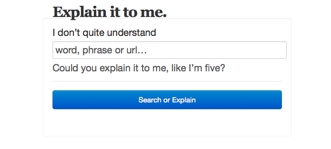
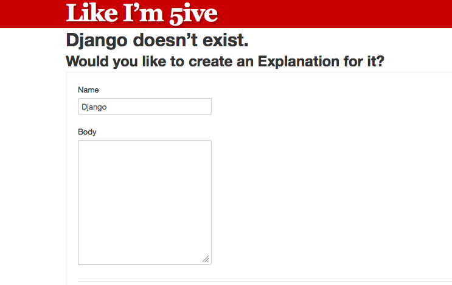

Searching¶
Like I’m 5’s most important feature is to help you search for topics, URLS, and other items for an explanation. Searching is easy and can be done on the home page by simply typing something into the search box.
If we can’t find what you are looking for, you’ll be given the opportunity to create the entry yourself.
